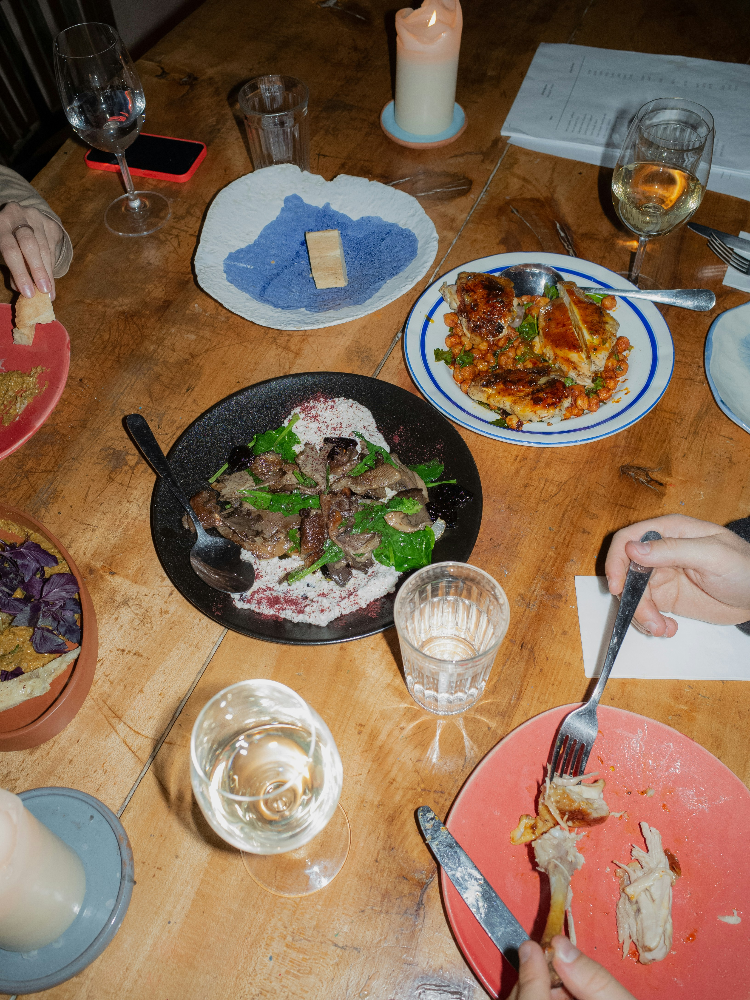

Skillet Chicken Thighs & Bacon Gravy
- + 8 skin-on chicken thighs
- + 200g smoked lardons (bacon)
- + 3 banana shallots, peeled
- + 450ml heavy chicken stock
- + Fresh thyme & garlic
Preheat oven to 425˚F. Prepare chicken thighs, seasoning skin-side generously with salt and pepper. Heat a large fry pan over medium-high heat, drizzle with olive oil and sear thighs, skin side down until caramelized, about 3-5 minutes. Dust chicken thighs with flour and generously season with salt, pepper, chili flakes and lemon zest. Flip thighs over and “fry” flour into rendered chicken fat for 2-3 minutes, remove chicken thighs and set aside while preparing gravy.
For the gravy - Add bacon to pan, cooking until crisp and scraping up caramelized bits. Add onions and garlic to the pan, cooking until just tender and fragrant, about a minute. Slice 1 lemon into wedges and scatter around the pan along with fresh herbs, cook for another minute. Deglaze with cider and simmer until reduced by half. Stir in hot chicken stock and bring to a simmer. Return chicken thighs to the pan, skin side up, nestling into the gravy. Zest remaining lemon over chicken and season with salt, pepper, and chili flakes. Pop into the oven to roast until crispy, about 20 minutes or until juices run clear. Serve straight out of the pan, garnishing with sliced lemon and fresh herbs